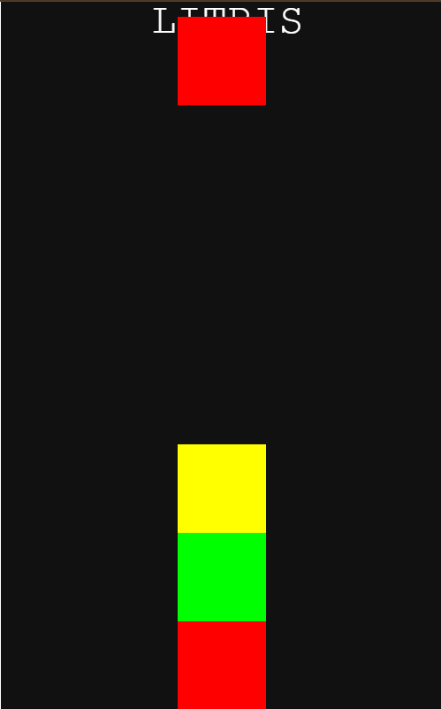

For my project, I chose to independently study Phaser.js in order to help me make Tetris spin off game. I just wanted to try something hard and make a game that was fun. I liked the game tetris and I wanted my own spin off where it would remove the grid based system and the block colors are what matters to clear the blocks. The first step was learning my tool and after a couple months of trying code with phaser I started to make my game. I spent another couple of months making my actual game. Then came presentation time and I presented my game to people. During those times, my challenges. Takeaways and skills I developed were all recorded into entrys. It was really hard and In the end I could only get rid of the grid. However, because it was a hard project and I didn't finish, it pushed me to try harder and I learned a lot more than if I would have just chosen something easy. I believe learning these skills like time management, learning how to debug and google was more important than making the perfect game and you can really grow when stuff is hard.
I had many challenges throughout the project and most of them were coding issues. When I was making the game, I had many mistakes and had to debug them with some taking more time than others. Some most notable ones were choosing the right code to use to show my blocks and generating textures. With enough time, I chose the right code to show my blocks and learnt how to make textures. Some takeaways I learned was to be innovative with coding, and spend your time wisely. When coding, there are many ways for the same thing to happen but with different code and it's important to try new things if one isn't working because there might be a shorter and easier way. Also managing your time is important because sometimes you can't complete everything at once so you split up everything into multiple days to ensure that you can finish everything in time. My next steps into this project is to learn more about Javascript and Phaser in order to complete the things that I couldn't do, like adding a feature to clear the blocks.
Link to the project